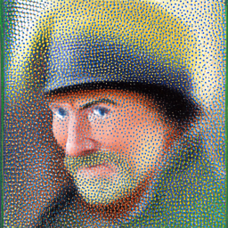
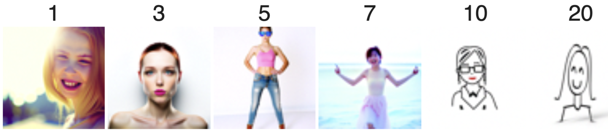
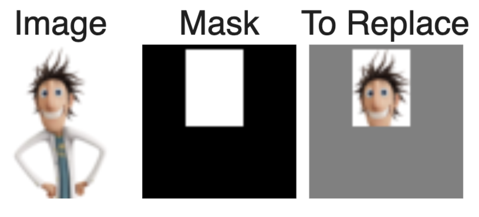

In the first half of this project, I implemented and deployed diffusion models for image generation. I also played around with diffusion sampling loops for other tasks, such as inpainting and creating optical illusions.
Part 0: Setup
We utilized the DeepFloyd IF diffusion model, a two stage model trained by Stability AI. In the notebook, we instantiate DeepFloyd's stage_1 and stage_2 objects used for generation, as well as several text prompts for sample generation.
I used the random seed 517 and num_inference_steps = 5, 20, and 200 to generate samples for precomputed text embeddings.
'an oil painting of a snowy mountain village' num_inference_steps = 5

'a man wearing a hat' num_inference_steps = 5'a rocket ship' num_inference_steps = 5'an oil painting of a snowy mountain village' num_inference_steps = 20'a man wearing a hat' num_inference_steps = 20'a rocket ship' num_inference_steps = 20'an oil painting of a snowy mountain village' num_inference_steps = 200'a man wearing a hat' num_inference_steps = 200'a rocket ship' num_inference_steps = 200
I notice that the quality of the outputs substantially increases as the number of inference steps increases, becoming more realistic and detailed. There's sharper edges, the colors become more vibrant, and there's increased number of unique textures. For 5 inference steps, I can tell that there is still a ton of noise given the dots, and the pictures look a lot more monotone. It looks like art or drawings, while for 200 inference steps it looks more like actual photos.
Part 1: Sampling Loops
1.1 Implementing the Forward Process
Here, I implemented a function to perform the forward process of diffusion, which takes in a clean image and adds noise to it. The noise level depends on timesteps, which I varied here with t = 250, 500, and 750 with an image of the Campanile.
1.2 Classical Denoising
A classical method of denoising images is with Gaussian blur filtering. I used torchvision.transforms.functional.gaussian_blur to try and remove the noise, but as you can see, this has pretty suboptimal results.
1.3 One-Step Denoising
Now, we'll use a pretrained diffusion model to denoise. For each of the 3 noisy images from 1.2 (t = [250, 500, 750]), I denoised the image by estimating the noise by passing it through stage_1.unet. This is a model that has been trained on a huge dataset of clean and noisy pairs of images. Then, I removed the noise from the noisy image to obtain an estimate of the original image. Here, I've visualized the original image, the noisy image, and the estimate of the original image for each of the timesteps we're interested in.
Looking better! The denoising UNet model does a decent job of projecting the image onto the natural image manifold, but it does get worse (and blurrier) as you add more noise. Onto iterative denoising we go...
1.4 Iterative Denoising
Diffusion models are designed to denoise iteratively. To implement this, I created strided_timesteps: a list of monotonically decreasing timesteps, starting at 990, with a stride of 30, eventually reaching 0. I've displayed the noisy image every 5th loop of denoising below, along with the final predicted clean image (using iterative denoising), one-step denoised Campanile, Gaussian Blurred Campanile, and original image for reference. Hmm, there's a "clear" favorite here...
Another thing we can do with the iterative denoising is to generate images from scratch, effectively denoising pure noise. Here are 5 sampled images using the text prompt "a high quality photo".
1.6 Classifier-Free Guidance (CFG)
The generated images in the prior section aren't super great. We can use Classifier-Free Guidance (CFG) to greatly improve image quality. Here, I implemented the iterative_denoise_cfg function to generate 5 images of "a high quality photo" with a CFG scale of γ = 7.
Much better and vibrant!
1.7 Image-to-image Translation
In order to denoise an image, a diffusion model must to some extent "hallucinate" new things and be creative! Essentially, the denoising process "forces" a noisy image back onto the manifold of natural images. Here, I took the Campanile image, added some noise, and forced it back onto the image manifold without any conditioning. Here are edits of the Campanile, using the given prompt at noise levels [1, 3, 5, 7, 10, 20] with text prompt "a high quality photo" again.
Here are edits of two more of my own test images, using the same procedure.
My favorite cartoon character, Flint LockwoodAnd his buddy, Barry
1.7.1 Editing Hand-Drawn and Web Images/h4>
This procedure works particularly well if we start with a nonrealistic image (e.g. painting, a sketch, some scribbles) and project it onto the natural image manifold. For this, I found one image from the web + hand drew two images to edit using the above method for noise levels [1, 3, 5, 7, 10, 20].
Web Image of a Cat

Hand Drawn Image of a GirlHand Drawn Image of a Monitor Setup
1.7.2 Inpainting
We can use the same procedure to implement inpainting. Given an original image and a binary mask m, we can create a new image that has the same content where m is 0, but new content wherever m is 1.
We will inpaint the top of the campanile.
We can also inpaint the football here!

And here's Flint again.It made his head kind of sad.
1.7.3 Text-Conditional Image-to-image Translation
Now, we will do the same thing as SDEdit, but guide the projection with a text prompt. This is no longer pure "projection to the natural image manifold" but also adds control using language. This is simply a matter of changing the prompt from "a high quality photo" to any precomputed prompt. I used the prompt "a rocket ship" for the Campanile image again, and two other cool buildings.